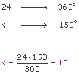
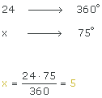
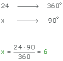
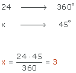
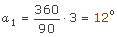
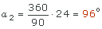
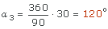
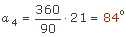
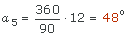

Ejercicios interactivos de diagramas de sectores
Completa las tablas:
1En una clase de 1º ESO de 24 alumnos se hace una encuesta preguntando a qué dedican su tiempo de ocio. Las respuestas se reflejan en el siguiente diagrama de sectores. Completa la siguiente tabla:
| Hobby | Alumnos | Grados |
|---|---|---|
| Televisión | 150º | |
| Lectura | 75º | |
| Deporte | 90º | |
| Otros | 45º | |
| Total | º |
| Hobby | Alumnos | Grados |
|---|---|---|
| Televisión | 10 | 150º |
| Lectura | 5 | 75º |
| Deporte | 6 | 90º |
| Otros | 3 | 45º |
| Total | 24 | 360º |
 Televisión
Televisión

 Lectura
Lectura

 Deporte
Deporte

 Otros
Otros

2En un instituto se ha realizado una encuesta a los alumnos de 2º de ESO para saber cuáles son los libros que más les gusta leer, y así poder comprar nuevos libros para la biblioteca. Los resultados son los que se muestran en el siguiente diagrama de sectores. Completa la siguiente tabla y, después, contesta a las preguntas que se te plantean:
| Tipo de libro | Alumnos | Grados |
|---|---|---|
| Poesía | 3 | º |
| Terror | 24 | º |
| Aventuras | 30 | º |
| Misterio | 21 | º |
| Teatro | 12 | º |
| Total | º |
¿A cuántos estudiantes se les ha realizado la encuesta?
Se ha hecho la encuesta a estudiantes.
¿Cuántos alumnos prefieren los libros de terror?
alumnos prefieren os libros de terror.
¿Qué libros son los que más gustan?
Los libros de
¿Y los que menos?
Los libros de
| Tipo de libro | Alumnos | Grados |
|---|---|---|
| Poesía | 3 | 12º |
| Terror | 24 | 96º |
| Aventuras | 30 | 120º |
| Misterio | 21 | 84º |
| Teatro | 12 | 48º |
| Total | 90 | 360º |
 Poesía
Poesía

 Terror
Terror

 Aventuras
Aventuras

 Miedo
Miedo

 Teatro
Teatro

 Se ha hecho la encuesta a 90 estudiantes.
Se ha hecho la encuesta a 90 estudiantes.
 24 alumnos prefieren los libros de terror.
24 alumnos prefieren los libros de terror.
 Los libros de aventuras son los que más gustan.
Los libros de aventuras son los que más gustan.
 Los libros de poesías son los que menos gustan.
Los libros de poesías son los que menos gustan.
Si tienes dudas puedes consultar la teoría